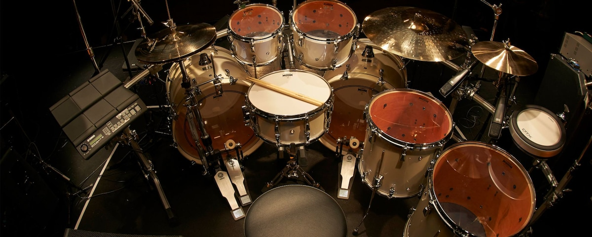
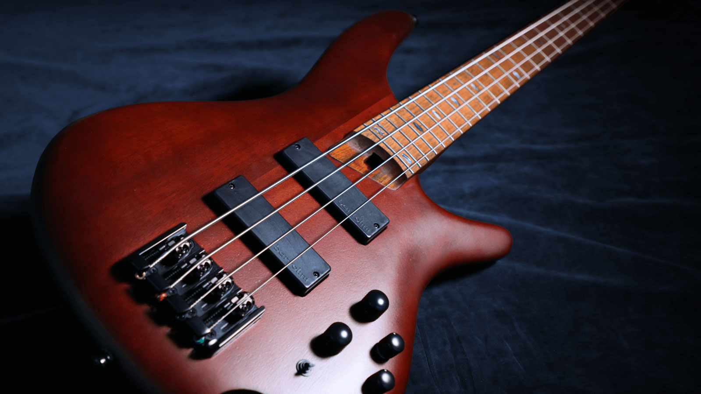

Studio
MY STUDIO EQUIPMENT
The table below is my current equipment that I use in my home studio:
MUSICAL INSTRUMENTS
Musical instruments I own and love to play:
DRUMS
The drumkit is the first instrument I started playing.
SYTHNESISER

This is a great instrument to play.
BASS
I am still learning the bass, but it is a lovely instrument to play.